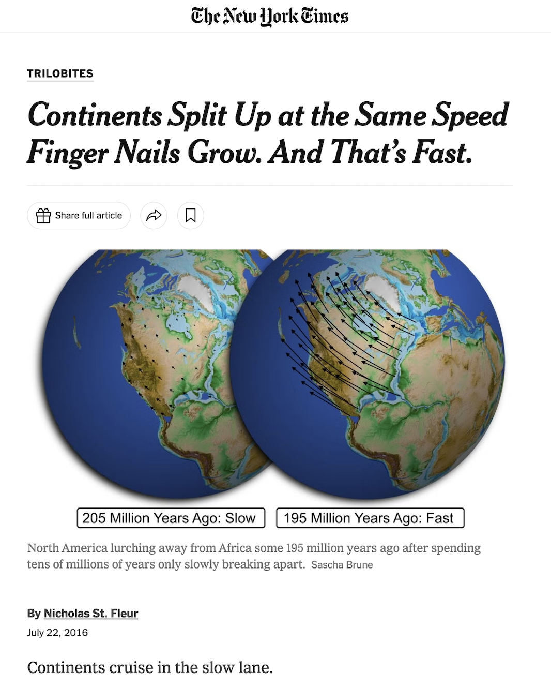
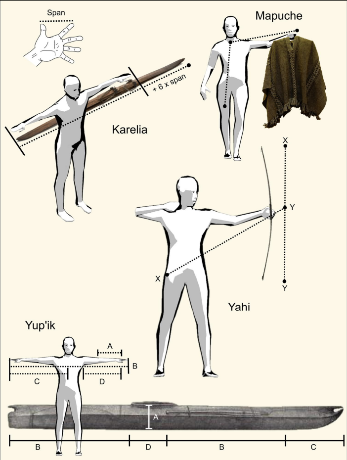
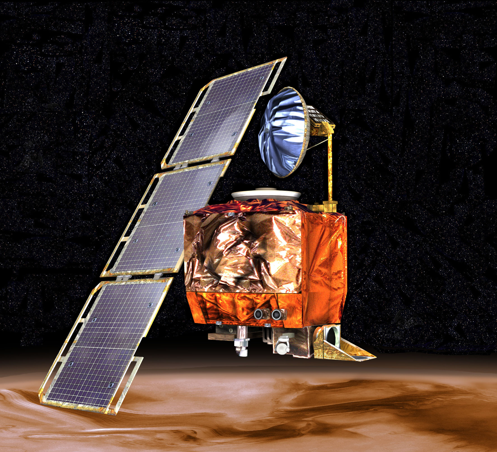
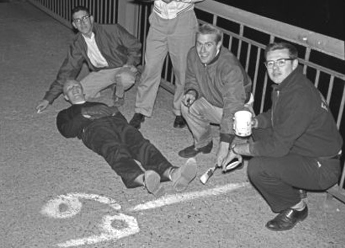

October 23, 2026
Jia Zhang
“the correlation of some target
to some comparator or unit.”


Kaaronen, Manninen, and Eronen, “Body-based units of measure in cultural evolution,” Science (2023)

Artist’s rendering of the Mars Climate Orbiter. Public domain.

“The smoot was created in October 1958 after seven MIT students calibrated the Mass. Ave. bridge using 5’7 Oliver Smoot '62.” – alum.mit.edu
If an atom was a dollar, then a grain of sand would be all the money in the world × 35,000.
If an atom is a person, then the population of the world would fit in a grain of sand a million times.
If $1 was a hair, then the average American's wealth would be about 2 heads of hair, and Elon Musk's would be every head of hair in Hungary.
If each second is $100, then the average American's net worth is a newborn baby 36 minutes old, and Jeff Bezos’ is the oldest person alive in the world, 117 years old.